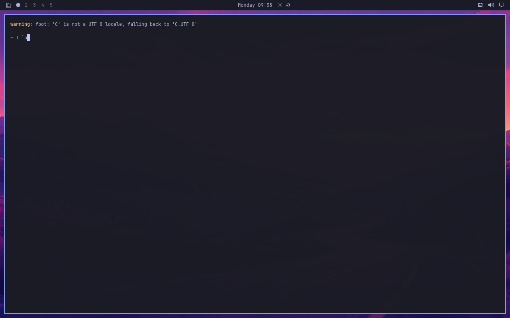
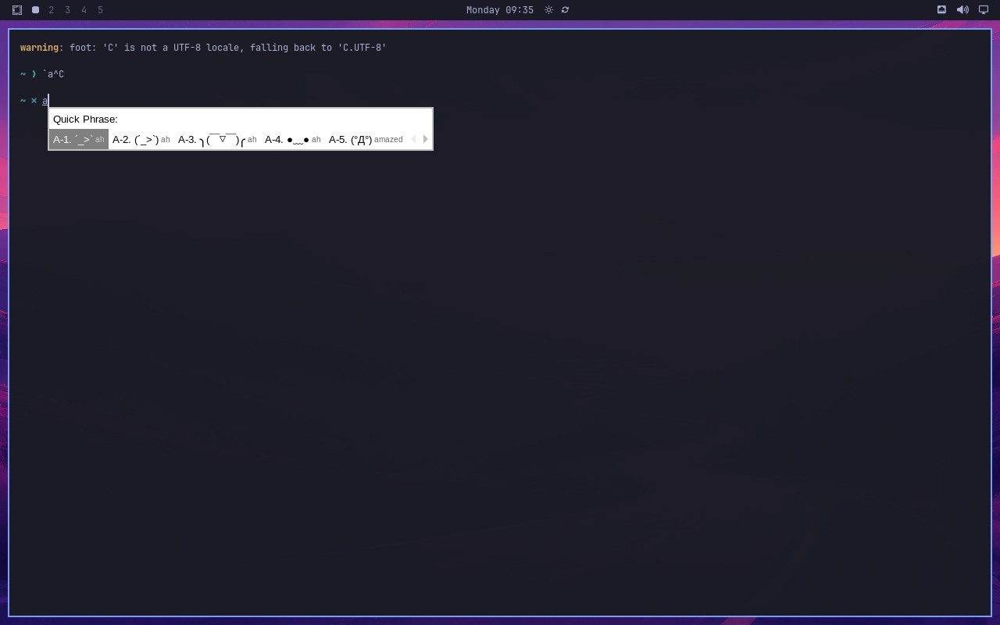

Evidence for upstream PR omacom/omarchy#12756,
issue #12365.
Revalidated against the exact candidate config and migration in a real Omarchy 4.0.3 VM.
Midscene inspected the live Hyprland desktop over VNC while QEMU QMP injected the keyboard chords.
The treatment began with an existing config containing another user choice and only commented
TriggerKey defaults; the shipped migration preserved that choice and appended the narrowed trigger.
The latest run passed 2/2 cases on the first attempt.
CI run: 35612533053.
Super+grave opens the Quick Phrase candidate menu, confirming the original collision.
After applying the shipped migration, Super+grave no longer opens fcitx5 UI and the following key reaches the terminal.

Super+semicolon still opens the Quick Phrase candidate menu, showing that the feature was narrowed rather than disabled.

Open the complete native Midscene report (steps, screenshots, and model reasoning)